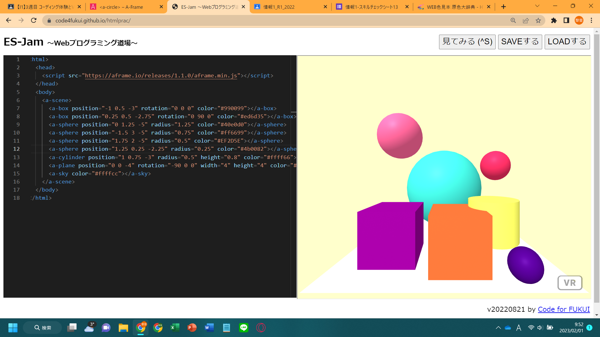
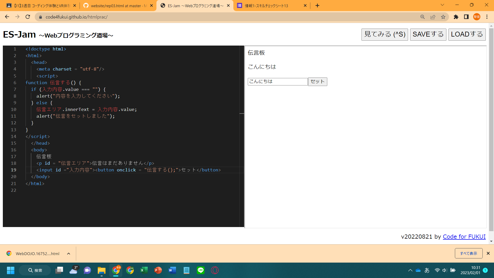

第3週目
3-1 JavaScript体験：VR空間を作る

VR空間
1.内容
Webプログラミング道場で、A-FRAMEからコピーしたプログラムをもとにVR空間を作った。
画面の左側でプログラムを書いて「見てみる」をクリックしたら、右側にオブジェクトが並ぶ空間ができた。
各オブジェクトの位置や配置する角度、色、高さ、幅などの値を書き換えたり、新たなオブジェクトを追加したりした。
2.感想
カラーコードを調べてみると、色々な色のカラーコードがあったので、自分の思い通りの色を表現でき驚いた。
マウスをドラッグしながら３D空間を見ていると、I2のときに位置関係の把握に苦戦したのを思い出した。
スマートフォンでもURLを開いてVR空間を試してみたいと思う。
3-2 JavaScript体験：伝言プログラムを作る

伝言板
1.内容
Webプログラミング道場で、伝言アプリを作った。
入力ボックスの中に伝言したい内容を書いて、「セット」ボタンをクリックしたら、セットされたと警告が表示され、その入力内容が伝言エリアに表示されるようになっている。
もし内容が入力されずボタンが押されたら、内容を入力するよう警告を表示した。
最後に世界標準で定められているHTMLの構造に直した。
2.感想
内容はそれほど難しくなかったので、スムーズに進められよかった。
でも、急いでやるとタイピングミスをして思うように動かなかったので、自分で間違いを見つけられる力が大切だと思った。
3-3 JavaScriptプログラムの３次元空間の体験
1.内容
VRゴーグルを通して、3次元空間を体験した。
球を飛ばしたり、オブジェクトを移動させたり、自由に操作した。
2.感想
特に景色が凝られているわけではないのに、球を飛ばしてそれを見ているだけでも、没入感ある空間を楽しめた。
床面の移動だけではなく、横や上にも移動でき、そこから眺めることができたらもっと面白そうだと思った。
JavaScriptのプログラムで、ここまでのことができるということに驚いた。いつか自分もJavaScriotで3D空間を作ってみたい。